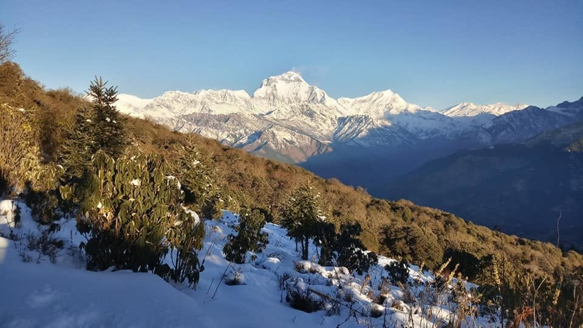
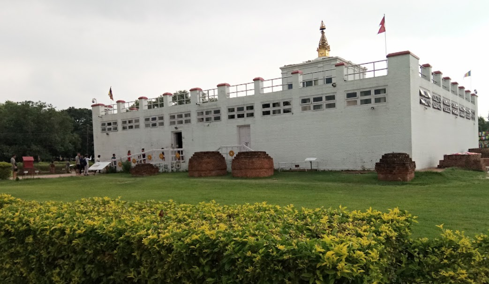
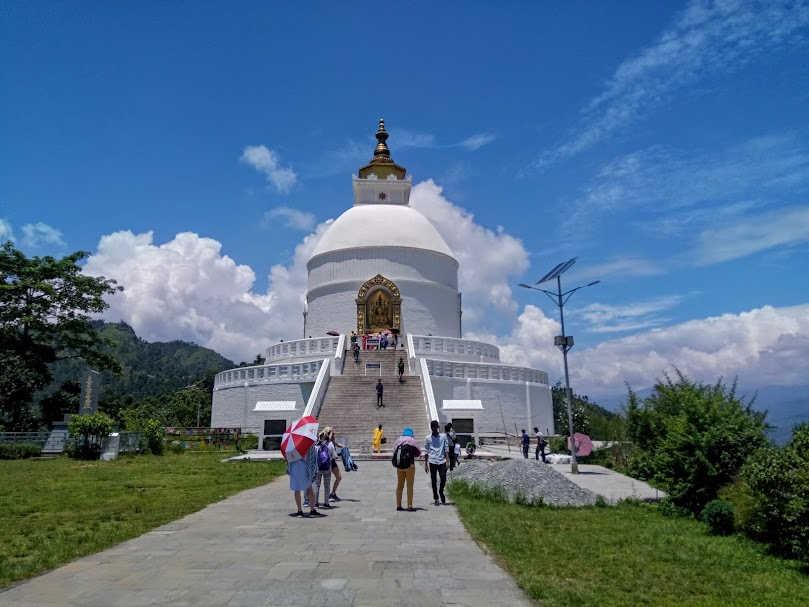
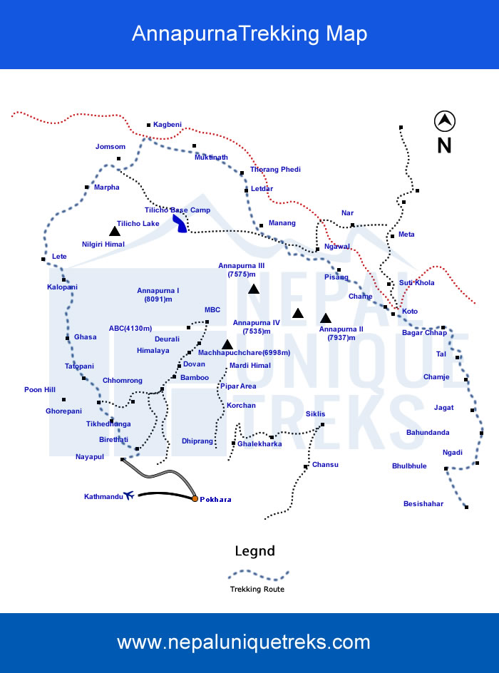

Christmas & New Year Tour in Nepal 2026/2027
Celebrate Christmas and New Year in a truly magical way with our specially crafted Christmas & New Year Holidays Package in Nepal. Nepal Unique Treks welcomes you to experience the festive season surrounded by the Himalayas, rich cultural traditions, peaceful temples, and warm Nepali hospitality.





Key Tour Facts
Tour Overview
Tour Highlights
Christmas & New Year Tour in Nepal 2026/2027 Introduction
Celebrate Christmas and New Year in Nepal with an unforgettable 12-day holiday combining Himalayan scenery, UNESCO World Heritage Sites, cultural experiences, wildlife adventures and festive celebrations. This Christmas and New Year Tour in Nepal takes you from the historic streets of Kathmandu to the panoramic mountain views of Nagarkot and Pokhara, the wildlife-rich landscapes of Chitwan National Park, and the charming hill town of Bandipur.
Designed for couples, families, friends and private groups, this Nepal Christmas and New Year holiday offers a relaxed way to experience the country's culture, nature and Himalayan landscapes during the festive season. Enjoy Christmas celebrations, beautiful mountain sunrises, jungle activities, traditional villages and special New Year experiences while traveling with a local Nepal trekking and tour operator.
Our Christmas & New Year Holiday Package in Nepal can also be customized according to your preferred travel dates, hotel category, activities and budget.
Overview
Celebrate Christmas and New Year in a truly magical way with our specially crafted Christmas & New Year Holidays Package in Nepal. Nepal Unique Treks welcomes you to experience the festive season surrounded by the Himalayas, rich cultural traditions, peaceful temples, and warm Nepali hospitality. Whether you are seeking adventure, spiritual refreshment, or a relaxing holiday, Nepal offers an unforgettable winter escape.
December and January are among the best times to explore Nepal’s natural beauty. The skies remain clear, offering spectacular views of snow-capped peaks such as Annapurna, Langtang, and Everest. Our holiday package includes a blend of sightseeing, soft adventure, cultural activities, and festive celebrations designed for couples, families, and solo travelers. From exploring UNESCO World Heritage Sites in Kathmandu to enjoying serene moments by Pokhara’s Fewa Lake, every day brings a new experience.
Christmas in Nepal is celebrated with lights, music, and joyful gatherings, while New Year’s Eve brings exciting parties, traditional dinners, and breathtaking fireworks in major cities. With our well-organized itinerary, you can enjoy these celebrations without any hassle. We arrange comfortable hotels, private transfers, expert local guides, and personalized services to make your festive journey stress-free and memorable.
You can choose from a variety of activities, such as short hikes, sunrise views from Nagarkot or Sarangkot, cultural dinners, wildlife safaris in Chitwan, or thrilling adventure sports in Pokhara. Whether you prefer a peaceful celebration or an action-packed holiday, Nepal has something for everyone.
By booking your Christmas & New Year tour in Nepal with Nepal Unique Treks, you ensure a heartwarming, safe, and enriching travel experience. Come and welcome the New Year in the land of mountains, spirituality, and timeless traditions an unforgettable celebration that stays with you for life.
Kathmandu Valley Sightseeing
Kathmandu Valley offers a fascinating blend of ancient history, vibrant culture, and sacred heritage. During sightseeing, travelers explore UNESCO World Heritage Sites such as Pashupatinath Temple, Boudhanath Stupa, Swayambhunath (Monkey Temple), and the historic Kathmandu Durbar Square.
These iconic landmarks showcase Nepal’s rich art, architecture, and spiritual traditions. Visitors can experience bustling local markets, traditional crafts, and centuries-old courtyards reflecting the valley’s royal past. The cultural diversity, friendly locals, and lively ambiance make Kathmandu a memorable highlight for every traveler. Perfect for photography, cultural learning, and peaceful spiritual moments, Kathmandu Valley is a must-visit destination in Nepal.
Trekking in Poon Hill
The Poon Hill Trek is a short yet rewarding trekking adventure in the Annapurna region, famous for its panoramic Himalayan sunrise. This trek takes you through charming villages, terraced fields, rhododendron forests, and warm Gurung and Magar communities. The highlight is the early-morning climb to Poon Hill (3,210m), offering 360-degree views of Dhaulagiri, Annapurna, Machhapuchhre, and Nilgiri. Suitable for beginners, families, and short-holiday visitors, the trek combines natural beauty with cultural experiences. Comfortable teahouses, scenic trails, and breathtaking mountain vistas make Poon Hill one of Nepal’s most popular and enjoyable trekking routes.
Pokhara Valley Sightseeing
Pokhara Valley is Nepal’s ultimate destination for natural beauty, adventure, and relaxation. Surrounded by peaceful lakes and Himalayan peaks, it offers stunning views of Machhapuchhre and the Annapurna range. Sightseeing includes the tranquil Fewa Lake, World Peace Pagoda, Gupteswar Mahadev Cave, Davis Falls, Bindabasini Temple, and the informative International Mountain Museum. Visitors can enjoy boating, paragliding, short hikes, and lakeside dining in a calm and refreshing environment. Pokhara is perfect for those seeking nature, culture, and gentle adventure, making it a favorite stop in every Nepal holiday package.
Lumbini – Buddha’s Birthplace
Lumbini, the birthplace of Lord Buddha, is one of the world’s most sacred pilgrimage destinations. Located in the Terai plains of Nepal, it features the Maya Devi Temple, the exact spot where Buddha was born, along with ancient ruins, monasteries, and peaceful meditation zones. The Sacred Garden, Ashoka Pillar, and international monasteries built by different countries offer deep spiritual and architectural significance. Lumbini is perfect for travelers seeking tranquility, history, and cultural understanding. A visit to this UNESCO World Heritage Site provides a profound insight into Buddhism and its global influence.
Chitwan National Park Activities
Chitwan National Park offers thrilling wildlife and jungle adventures in Nepal’s subtropical lowlands. Travelers can enjoy exciting activities such as jeep safaris, canoe rides, bird watching, jungle walks, and visits to the Elephant Breeding Center. The park is home to endangered species like the one-horned rhinoceros, Bengal tiger, gharial crocodile, and over 500 bird species. Cultural programs featuring Tharu dance and village tours add a unique local experience. Chitwan is ideal for nature lovers, wildlife enthusiasts, and families looking for safe, guided adventure in Nepal’s lush, diverse jungles.
Why Celebrate Christmas and New Year in Nepal?
Nepal offers a rare mix of crisp, clear winter skies, ancient culture, wildlife, and festive energy, without the crowds and prices of typical Western holiday destinations. December and January fall in the dry season, so you get stable weather, sharp mountain views, and a very different holiday from the usual one.
Himalayan Mountain Views
Winter is among the clearest times of year for mountain visibility. With little monsoon haze, peaks like Annapurna, Dhaulagiri, Manaslu, and Langtang stand out against deep blue skies. You can see them from Pokhara's lakeside, from hilltop viewpoints near Kathmandu, or on a scenic mountain flight toward Everest.
Christmas Celebrations in Kathmandu, Pokhara, and Nagarkot
Kathmandu: Thamel and Durbar Marg have decorated hotels, restaurants, and cafés, along with carol services, special dinners, and live music. Churches hold Christmas Eve and Christmas Day services, and Christmas is an official public holiday in Nepal.
- Pokhara: The Lakeside strip has a relaxed festive mood, with lakefront dinners, bonfires, and Himalayan reflections on Phewa Lake.
- Nagarkot: This hill station is the quieter option. Many resorts offer Christmas dinners, fireplaces, and sunrise views of the Himalayas, which makes it good for a peaceful, romantic holiday.
Winter Weather
Days are generally sunny and mild, while nights and mornings get cold, especially at altitude.
- Kathmandu: pleasant days, chilly nights
- Pokhara: mild and comfortable, with cool mornings
- Nagarkot and hills: cold nights, spectacular mornings
- Chitwan (lowlands): warm days, cool, often foggy mornings
Pack layers, since the temperature swing between day and night can be large.
UNESCO Heritage Sites
Nepal has several UNESCO World Heritage Sites, and winter's dry weather makes sightseeing easy. The Kathmandu Valley alone has seven protected monument zones, including:
- Kathmandu, Patan, and Bhaktapur Durbar Squares
- Swayambhunath (the "Monkey Temple")
- Boudhanath Stupa
- Pashupatinath Temple
- Changu Narayan Temple
Lumbini, the birthplace of the Buddha, is also a major draw, and Chitwan and Sagarmatha (Everest) are listed as natural sites.
Chitwan Jungle Safari
Winter is a good season for wildlife in Chitwan National Park. The grass is shorter, which makes animals easier to spot. Typical experiences include jeep safaris, canoe rides, and guided jungle walks. You can look for one-horned rhinoceroses, deer, crocodiles, and a wide variety of birds, and with luck, a Bengal tiger. Tharu cultural dances in the evening round it off. Chitwan pairs well with a Christmas or New Year itinerary because it is warm when the hills are cold.
Nepalese Culture
The holiday season is a good time to experience Nepal's living traditions. Around the end of December you may catch local festivals such as Yomari Punhi (a Newar festival with sweet steamed dumplings) and Tamu Lhosar (the Gurung New Year, usually around December 30). Visits to temples, monasteries, and local homes, plus cooking classes for dishes like momos and dal bhat, give you a cultural side to the trip that most holiday destinations can't match.
New Year's Eve Celebrations
Nepal's traditional new year follows the Bikram Sambat calendar and falls in mid-April, but the international New Year is widely celebrated, especially in tourist areas.
- Kathmandu (Thamel): parties, DJ nights, hotel galas, and rooftop dinners
- Pokhara: lakeside parties, bonfires, and live music
- Nagarkot and resorts: quiet fireside countdowns and sunrise views on New Year's Day
You can choose anything from a lively party to a calm countdown under the stars.
Private and Customizable Tours
Nepal suits tailor-made travel. Private tours can be built around your interests, pace, and budget, with your own guide and driver. Typical combinations include culture plus nature (Kathmandu, Pokhara, Chitwan), short scenic hikes, a Himalayan flight, spa and wellness stays, and extensions to Bhutan or Tibet. Private itineraries also let you time the Christmas and New Year dates exactly as you like.
Family-Friendly Travel
Nepal can work very well for families. Kids enjoy elephant-free wildlife safaris (look for ethical operators), boat rides on Phewa Lake, easy village walks, kite-flying, and hands-on activities like pottery in Bhaktapur. Winter's dry, mild days make sightseeing comfortable, and many hotels offer family rooms and festive meals. Choose lower-altitude destinations and shorter drives for younger children.
Couple and Honeymoon Options
Nepal is a strong romantic choice thanks to its scenery and privacy.
- Sunrise and sunset over the Himalayas from Nagarkot or Pokhara
- Boutique resorts and lodges with fireplaces and mountain-view rooms
- Candlelit lakeside dinners in Pokhara
- Private jungle lodges in Chitwan
- Couples' spa treatments and sunrise yoga
- Scenic helicopter or mountain flights
Christmas & New Year Tour in Nepal 2026/2027 Itinerary: Day by Day
12 Days program for Christmas & New Year Tour in Nepal 2026/2027. Daily timings and sequences remain flexible according to weather, flight operations, and group pace.
Day 1: Welcome to Nepal in Kathmandu International Airport 1345 m
Approx. 1,345 m / 4,413 ft
Welcome to Nepal! Upon arrival at Tribhuvan International Airport (6.5 km from the city center), our representative will greet you and transfer you to your hotel in Kathmandu. After check-in, you will receive a short briefing about the trip, permits, and necessary preparations. Depending on your arrival time, you may explore nearby markets, local temples, or simply rest after your long flight. In the evening, enjoy a welcome Nepali dinner and relax at your hotel. Overnight in Kathmandu.
Day 2: Kathmandu valley exploring with private tour guide (Sightseeing) 1345m, 5 hrs
Approx. 1,345 m / 4,413 ft
Today, you explore the cultural treasures of Kathmandu Valley with a private tour guide. Visit UNESCO World Heritage Sites such as Swayambhunath (Monkey Temple), Pashupatinath Temple, Boudhanath Stupa, and Kathmandu Durbar Square. Your guide will explain the religious and historical significance of each monument. Driving distances are short—typically 2–5 km between major landmarks. Enjoy views of vibrant streets, sacred temples, and centuries-old architecture. Return to the hotel in the evening for preparation for the next day’s journey. Overnight in Kathmandu.
Day 3: m, Flight to Pokhara International Airport and drive to Ulleri Village 2050m, 3 hrs
Approx. 2,050 m / 6,726 ft
Take a scenic 30-minute flight to Pokhara International Airport (820 m), where the Annapurna Himalaya greets you with stunning views. After landing, drive about 42 km toward Nayapul and further uphill to Ulleri Village. The road gradually climbs through terraced farmland, traditional Magar settlements, and forested hills. The final section ascends to Ulleri at 2050 m, famous for its stone steps and panoramic landscape. Spend the afternoon exploring the village and preparing for tomorrow’s trek. Overnight in Ulleri.
Day 4: Trek from Ulleri to Ghorepani Village 2874m, 5/6 hrs
Approx. 2,874 m / 9,429 ft
Begin your beautiful trekking day with a steady climb through rhododendron and oak forests. The trail covers approximately 10–12 km, gradually gaining altitude as you ascend toward Ghorepani. Enjoy refreshing mountain air, sounds of birds, and views of Annapurna South and Hiunchuli along the way. Pass through Banthanti and Nangethanti before reaching Ghorepani, a charming Gurung and Magar village at 2,874 m. Famous for its viewpoints and colorful tea houses, Ghorepani provides spectacular sunset views over the mountains. Overnight in Ghorepani.
Day 5: Visit Poon Hill 3210m, Trek from Ghorepani to Tadapani 2630m, 6 hours
Approx. 2,630 m / 8,629 ft
Early in the morning, hike 1.5 km uphill to Poon Hill (3,210 m) for a breathtaking sunrise over Annapurna, Dhaulagiri, Machhapuchhre, and Nilgiri. After descending back to Ghorepani, enjoy breakfast and begin your trek to Tadapani. The route covers about 8–9 km through dense rhododendron forest, ridge walks, and scenic descents. This section is rich in wildlife, including langur monkeys and various bird species. Reach Tadapani (2,630 m), known for its close-up view of Annapurna South and Fishtail. Overnight in Tadapani.
Day 6: Trek from Tadapani to Ghandruk and drive to Pokhara 4 hrs Trek, 3 hours drive, 810m
Approx. 810 m / 2,657 ft
Descend approximately 7 km from Tadapani to Ghandruk, a stunning Gurung village famous for culture, stone houses, and mountain views. The trek takes around 4 hours through forested paths and terraced fields. Explore Ghandruk’s traditional museum and enjoy panoramic views of Annapurna South, Hiunchuli, and Machhapuchhre. After lunch, drive 3 hours (about 55 km) back to Pokhara. Spend your evening relaxing at Lakeside or exploring the peaceful Fewa Lake area. Overnight in Pokhara (810 m).
Day 7: Pokhara Valley Sightseeing 810m, 5/6 hrs
Approx. 810 m / 2,657 ft
Enjoy a full day of sightseeing around Pokhara Valley. Visit the World Peace Pagoda for breathtaking lake and mountain views, the Gupteswar Mahadev Cave, Devi’s Waterfall, and the International Mountain Museum, which showcases Nepal’s mountaineering history. Drive about 20–25 km in total during the day. Stroll around Phewa Lake and visit Barahi Temple, situated on an island. Pokhara offers a perfect blend of natural beauty and cultural heritage. Overnight in Pokhara.
Day 8: Drive from Pokhara to Lumbini 258 km, 6/7 hrs
Approx. 150 m / 492 ft
Today, drive approximately 258 km from Pokhara to Lumbini, the birthplace of Lord Buddha. The journey follows the Siddhartha Highway, passing through lush hills, charming villages, and river valleys. After arriving in Lumbini (150 m), check in to your hotel and visit the nearby sacred garden if time permits. Lumbini is a UNESCO World Heritage Site known for its monasteries, Maya Devi Temple, Ashoka Pillar, and spiritual ambiance. Overnight in Lumbini.
Day 9: Drive from Lumbini to Chitwan National Park 162km, 2 hours 30 minuts
Approx. 150 m / 492 ft
After breakfast, drive about 162 km to Chitwan National Park. The road is smooth and scenic, passing through plains and small towns. Upon arrival, check in at your jungle resort and receive a briefing about the upcoming wildlife activities. In the afternoon, enjoy a short walk or visit a Tharu cultural village. The region sits at around 150 m elevation and is known for its warm climate and rich biodiversity. Overnight in Chitwan.
Day 10: Chitwan National Park Activities 150m, 5/6 hours
Approx. 151 m / 495 ft
Enjoy a full day of exciting jungle activities inside Chitwan National Park, a UNESCO site famous for Bengal tigers, one-horned rhinos, crocodiles, deer, and over 500 bird species. Activities include canoeing, jungle walk, elephant breeding center visit, jeep safari, and bird watching. Total walking and safari distance varies between 10–20 km depending on the chosen program. Experience the unique Tharu cultural show in the evening. Overnight in Chitwan.
Day 11: Chitwan to Kathmandu by private Car, 150m, 5/6 hours
Approx. 1,345 m / 4,413 ft
Drive approximately 160–170 km back to Kathmandu by private car, following the Trishuli River corridor. Enjoy scenic views of hills, rivers, and villages along the Prithvi Highway. Once you reach Kathmandu (1,345 m), check into your hotel and enjoy free time for shopping or relaxing. In the evening, join a farewell dinner with the Nepal Unique Treks team. Overnight in Kathmandu.
Day 12: Departure to International Airport 1345m, 6.5 km, 30 minuts
Approx. 1,345 m / 4,413 ft
After breakfast, our team will transfer you 6.5 km to Tribhuvan International Airport for your final departure. We ensure a smooth and timely drop-off for your flight. Thank you for traveling with Nepal Unique Treks!
What is Included (Regular Package)
What is Excluded
Dates & Availability
Christmas & New Year Tour in Nepal 2026/2027 Route Map

Trip Feedback
Explore verified traveller stories or leave feedback on Nepal Unique Treks.
Visit Nepal Unique Treks